Pano Periyodik Kontrol
Fotoğraflı, renk kodlu 17 maddelik form; ZPKK/ZPKR ve İSG mevzuatına uygun rapor ve öncelikli aksiyon listesi.
Alanya · Antalya
Elektrik güvenliği, enerji verimliliği ve akıllı otel teknolojilerini tek mühendislik çatısı altında buluşturuyoruz.
Mühendislik Hizmetleri
Mevzuata uygun raporlamadan tüketim analizine kadar, sahadaki veriyi uygulanabilir bir yol haritasına dönüştürüyoruz.
Fotoğraflı, renk kodlu 17 maddelik form; ZPKK/ZPKR ve İSG mevzuatına uygun rapor ve öncelikli aksiyon listesi.
Topraklama direnci ölçümü ve tesis elektrik güvenliği için resmi, izlenebilir teknik raporlama.
Elektrik, doğalgaz ve su faturalarında hatalı kalem, kaçak maliyet ve tasarruf fırsatlarının tespiti.
Saatlik mahsuplaşma analizi ile güneş enerjisi yatırımınızın gerçek getirisini görün.
Otel tüketim analizi, verimlilik projeleri ve ISO 50001 enerji yönetim sistemi desteği.
Su tüketim analizi, tasarruf projeleri ve sürdürülebilir turizm süreçleri için danışmanlık.
TMMOB EMO formatında YG tesisleri işletme sorumluluğu ve aylık kontrol raporu.
Malzeme ve hizmet ihtiyaçlarınız için kapsamı net, profesyonel ve hızlı teklif hazırlığı.
Akıllı Otel Teknolojileri
Otelinizin operasyonunu sahadan merkeze bağlayan, mevcut altyapınıza uyarlanabilir teknoloji çözümleri.
Akıllı Ölçüm
Enerji analizörleri, uzaktan okunabilir su sayaçları ve merkezi raporlama ile manuel okumaya son verin.
Teknoloji Ürünleri
Enerji tasarrufu, tesis otomasyonu ve can kurtarma teknolojilerini ihtiyaca göre projelendiriyoruz.
Klima ve oda elektriğini kullanım durumuna göre yöneten Klisens çözümleri.
Ürünleri inceleyin 02OperasyonServis, teslimat, karşılama ve mobil tanıtım için Saha Robotik ürünleri.
Ürünleri inceleyin 03Plaj ve HavuzUzaktan kumandalı Dolphin1 ile hızlı ve güvenli su üstü müdahalesi.
Ürünü inceleyinEnerji Yönetimi
Mevcut tüketimin analizinden uygulama ve sürekli izlemeye kadar enerji maliyetlerinizi yönetilebilir bir sisteme dönüştürüyoruz.
Elektrik, doğalgaz ve su tüketimlerini birlikte değerlendirerek tasarruf potansiyelini ve öncelikli aksiyonları belirleriz.
Bina ve tesislerde enerji kullanan sistemleri ölçer, tüketim profilini çıkarır; tasarruf projeleri ile yatırım ve geri ödeme planını hazırlarız.
Mevcut ve yeni binalar için enerji performansını değerlendirir, gerekli saha ve proje verileriyle Enerji Kimlik Belgesini hazırlarız.
Tarife, reaktif tüketim, güç aşımı ve dönemsel sapmaları izleyerek gereksiz maliyetleri görünür hale getiririz.
Enerji politikası, önemli enerji kullanımları, performans göstergeleri ve iyileştirme planları için uygulama desteği sunarız.
Sayaç ve analizör verilerini uzaktan takip ederek tüketim, alarm ve karşılaştırma raporlarını tek merkezde toplarız.
Tüketim eğrisi, üretim verisi ve mahsuplaşmayı inceleyerek yatırımın teknik ve ekonomik uygunluğunu değerlendiririz.
Aydınlatma, motor, pompa, HVAC, otomasyon ve çalışma programlarında ölçülebilir iyileştirmeler planlarız.
Uygun projelerde yatırım, tasarruf hedefi ve ölçme-doğrulama esaslarını içeren performans odaklı çalışma modeli kurarız.
Enerji verilerinden emisyon göstergeleri üretir; azaltım hedefleri ve sürdürülebilirlik raporlaması için yol haritası hazırlarız.
Klisens Enerji Tasarruf Ürünleri
Otel, apart, ofis ve konutlarda klima ile oda elektriğini ihtiyaca göre yönetmek için satış, keşif ve uygulama desteği.
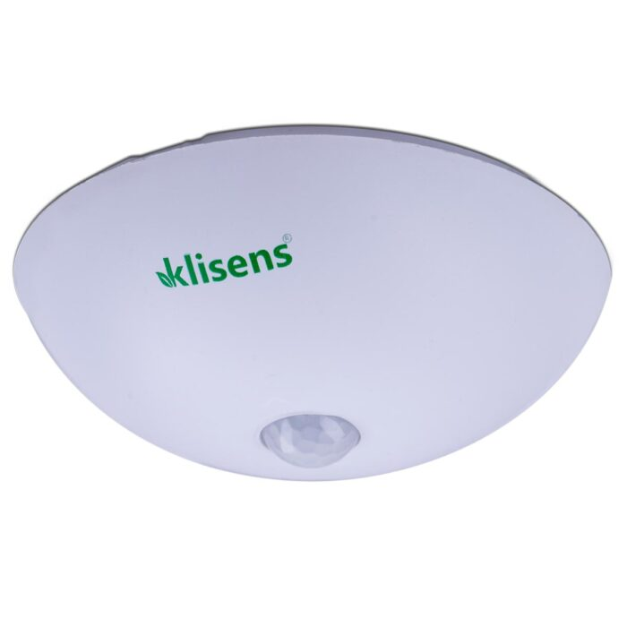
Odada hareket ve kullanım durumuna göre klimanın gereksiz çalışmasını önlemeye yardımcı olur; konforu korurken enerji kaybını azaltır.
Teklif isteyin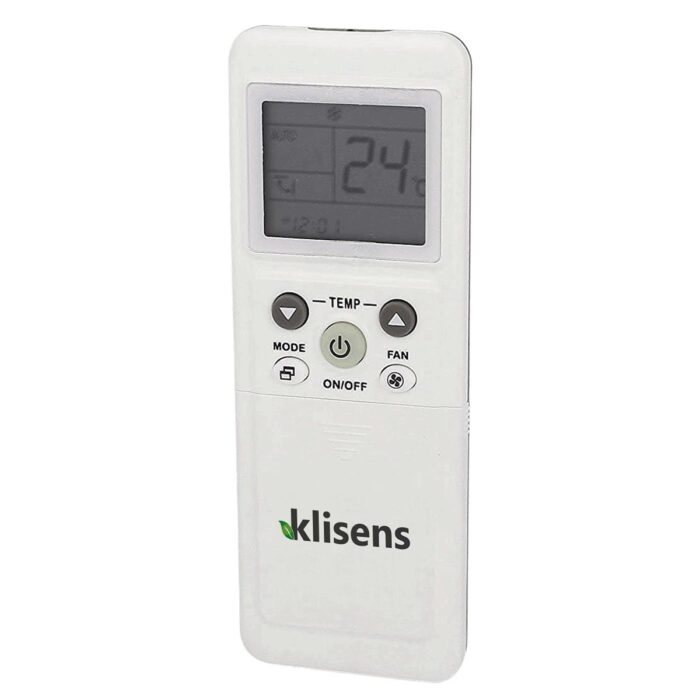
Klima kullanımını belirlenen sıcaklık ve çalışma kurallarıyla sınırlandırarak kontrolsüz tüketimin azaltılmasına destek olur.
Teklif isteyin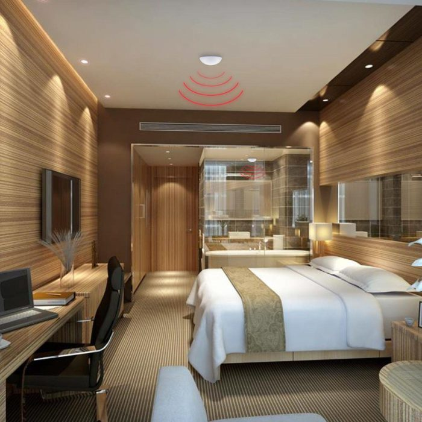
Misafir veya kullanıcı odadan ayrıldığında aydınlatma, priz ve iklimlendirme yüklerinin kontrollü şekilde yönetilmesini sağlar.
Teklif isteyinÜrün adları ve görselleri Klisens’in resmî ürün sayfasından alınmıştır.
Saha Robotik Ürünleri
Otel, restoran, hastane, alışveriş merkezi ve kurumsal tesisler için satış, keşif ve uygulama desteği.
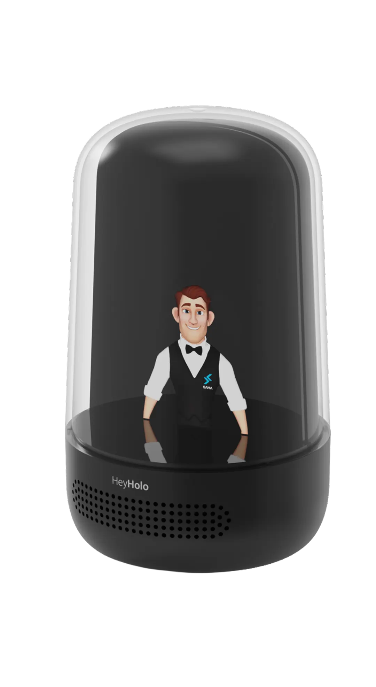
Çok dilli müşteri etkileşimi, sipariş alma ve POS entegrasyonu için akıllı asistan.
Teklif isteyin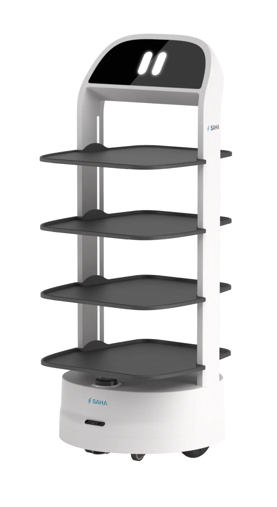
Yemek-içecek servisi, bulaşık toplama, kutlama modu ve gerçek zamanlı uzaktan izleme.
Teklif isteyin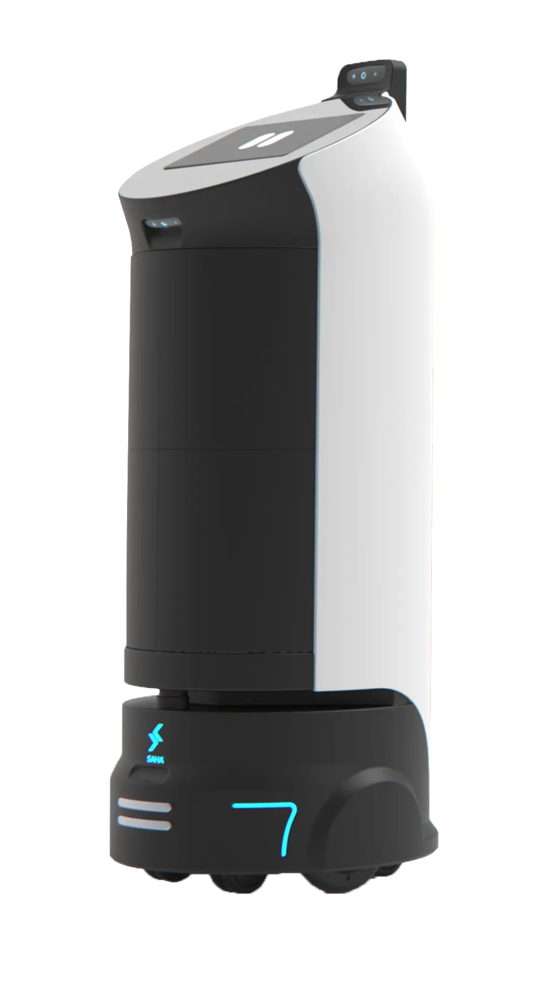
Asansör, otomatik kapı ve bina sistemleriyle entegre güvenli, temassız katlar arası teslimat.
Teklif isteyin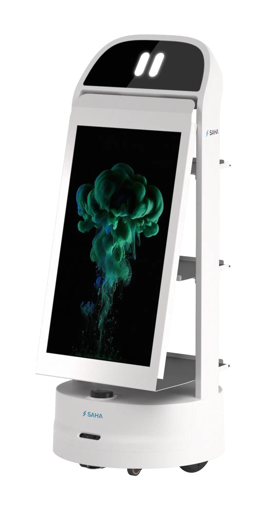
32 inç dokunmatik ekranla otonom reklam, yönlendirme ve etkileşimli içerik sunumu.
Teklif isteyin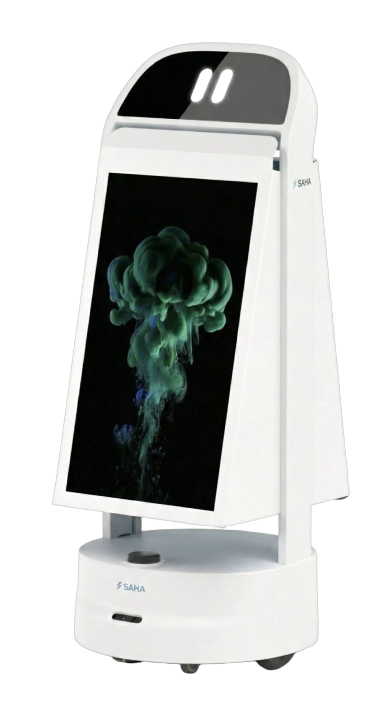
Yoğun ziyaretçi alanlarında iki yönlü görünürlük sağlayan hareketli iletişim platformu.
Teklif isteyin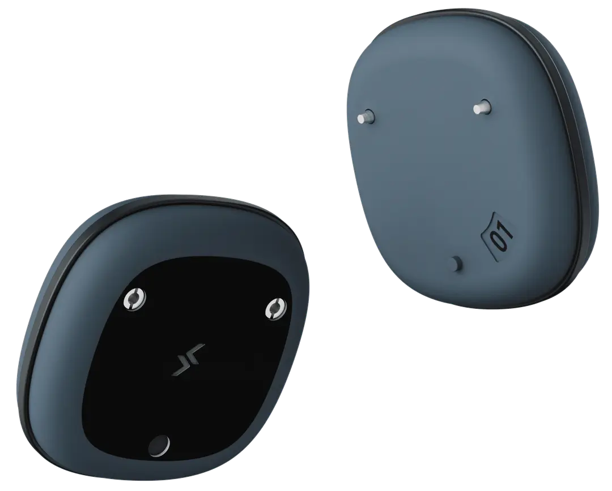
UWB tabanlı hassas konum ve takip desteğiyle operasyonel hareketlerin izlenmesine yardımcı olur.
Teklif isteyinÜrün adları ve görselleri Saha Robotik’in resmî ürün ailesinden alınmıştır.
Can Kurtarma Teknolojileri
Plaj, havuz, marina ve su sporları alanlarında operatörün suya girmeden kazazedeye hızla ulaşmasına yardımcı olan uzaktan kumandalı kurtarma cihazı.
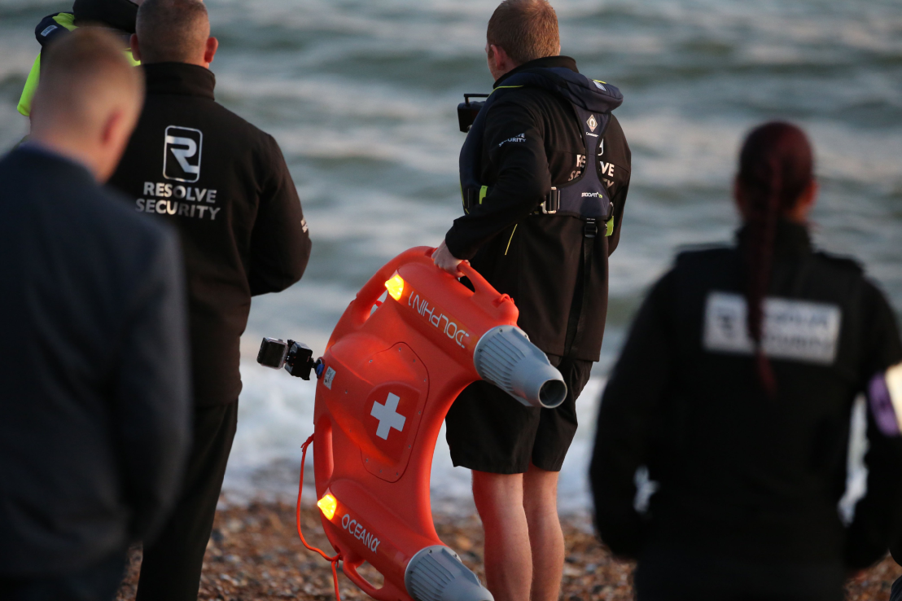
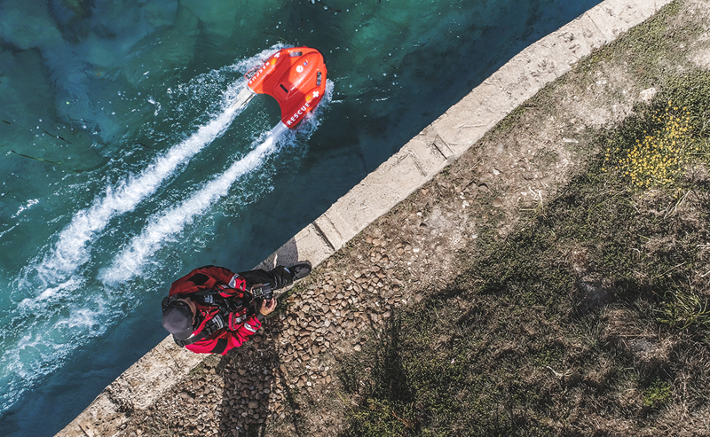
Ürün bilgileri ve görseller Oggymarin’in resmî Dolphin1 sayfasından alınmıştır.
Referanslarımız
Turizm, sağlık, enerji ve ticari tesislerde edindiğimiz saha deneyiminden seçili referanslar.
Ücretsiz Ön Görüşme
İhtiyacınızı paylaşın; saha keşfi, ölçüm, raporlama veya teknoloji entegrasyonu için kapsamı netleştirelim.
Hacet Mah. Erkin Sok. 1/6
Alanya / Antalya